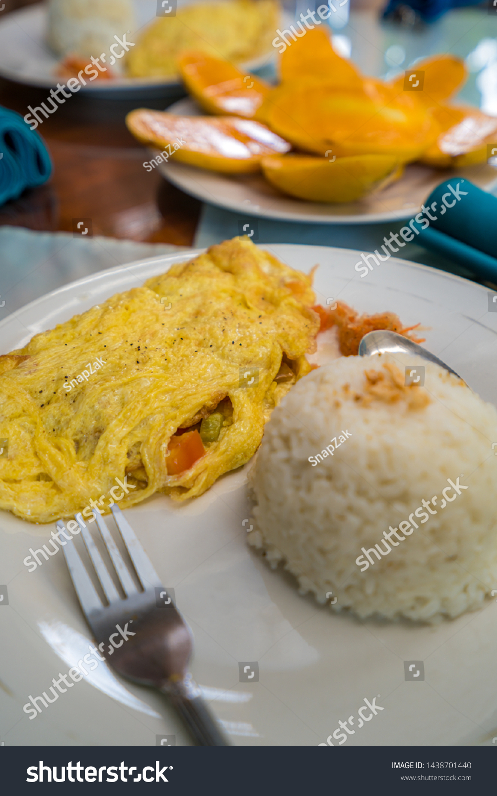

Home
Filipino Omelet

Description
A Filipino version of the usual omelet recipes with simple addition
Ingredients
- 3 Eggs
- 2 Tomatoes
- Onions
- Vinegar
- Magic Sarap MSG
- Salt
Steps
- Beat the three eggs in a small bowl until properly mixed
- Add a dash of salt, msg and a table spoon of vinegar in the whisked eggs
- Cut Onions and Tomatoes into smaller pieces
- Saute onions in a heated pan in oil until soft and aromatic
- Add cut tomatoes until slightly seared
- Add the whisked egss in the pan
- Make sure to let the mixture spread on the pan
- Wait until golden brown and flip the omelet
- Wait again and flip back to other side
- Fold one side of the omelet and serve in a plate